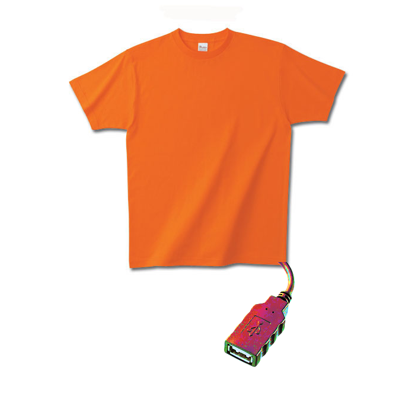

2015年予想
概要
タイトルに意味は無い。
こんなこといいなできたらいいなを適当に書いておく。
ウェアラブル(笑)とかはどうでもいいので、そもすでに身につけている物をもっと良くする方向で考えたい。
服に充電機能がついた商品が市場に出回ってほしい
ポータブルバッテリーの極地、着るバッテリーとか実用化されると思う。
電源繊維とかそういうの。
たとえばシャツだったら下のフチらへんからUSB生やすと良いと思う。

服充電機能付き家電
洗濯機か乾燥機か収納家具、というかしまってる間に充電的なタンスあたりが出回ると嬉しい。
ハンガーに仕掛けるのも考えたけどシャツとか乾かすときはともかくそれ以外の状態で充電しにくそうなので、充電するのは仕舞うときが良い予感。
充電絹 という単語が流行る
誤変換から拾ってみた。
充電機能のある服だけを扱うメーカーとかできねーかなー。
こちらからは以上です。2015年初の記事だった。